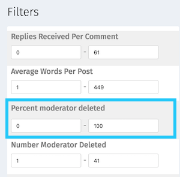
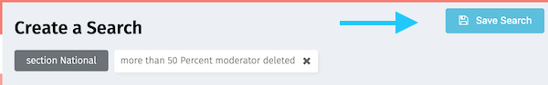

Trust overview
What is Trust?
The Trust product is a tool that allows journalistic organizations to filter through and create metrics based on individual comment behavior, and also add qualitative information. This information can be used to help journalistic organizations take next steps to better utilize and strengthen their communities.
The tutorials section will help guide you through accomplishing goals like the following:
- I would like to find the most liked comments based on keyword/topic searches, so that I can do a round up (for instance, “best comments written about the Zika virus”).
- I would like to identify commenters who leave high-quality comments that appear to be expert, so that potential sources can be identified.
- I would like to identify new commenters who leave comments that get a lot of likes, so I can welcome them personally.
- I would like to identify trolls on certain topics or authors, so that their comments on these subjects can automatically be moved to pre-moderation/create notifications for moderators to pay attention.
Roadmap
The Trust beta will be released Q3 of 2016.
Trust sections
Trust is comprised of the following sections:
- Dashboard
- Community Explorer
- Lists
- Settings
Trust tutorials
This is where you can find tutorials on how to use Trust. This section is still in development, as Trust continues to evolve.
Do you have a tutorial you’d like to see here? Please get in touch and let us know about it, or better still, add it yourself!
What would you like to do?
- Identify trolls: I would like to identify trolls on certain topics or authors, so that their comments on these subjects can automatically be moved to pre-moderation/create notifications for moderators to pay attention.
We are developing additional tutorials, including “Identify the most liked comments” and “Identify high quality new commenters.”
Identify trolls
We would like to identify trolls on certain topics or authors, so that their comments on these subjects can automatically be moved to pre-moderation/create notifications for moderators to pay attention.
What are some ways that can we identify trolls?
- A user with a high percentage of moderator deleted comments.
What might we be able to do about users like this?
- It’s possible that a user may not exhibit troll behavior in all sections or for all authors. We can identify the sections in which they havea high percentage of moderator deleted comments and ban them only for those sections/authors, so that they can continue to contribute to the community elsewhere.
- We can automatically move that user’s comments into pre-moderation.
How to identify trolls on certain topics or authors
We are going to create and save a list of commenters who have a high percentage of moderated deleted comments for a particular section or author. For the purposes of this tutorial, we’ll assume we are looking for trolls in the “National” section.
1) Open the “Create a Search” page by clicking the wrench symbol on the side navigation bar.

2) In the “Filters” section, choose “Section” in the drop down. This will trigger the display of a second drop down, which will let you choose which section you want to filter in (in this case, the “national” section).


3) Scroll down to the “Percent moderator deleted” filter.

4) Fill in “50” and “100”: you’re now filtering out all of the users in the “National” section who have had 50% or more of their comments moderator deleted.

5) You now have a filter that shows you all of the users who have had over 50% of their comments in the National section deleted by moderators. You can now save that search to refer back to later, or to allow your colleagues to have access to the search as well.
Click the “Save Search” button in the upper right to save.

6) You can now fill in the name of the search and a brief description. The “tag” field will create a tag that will attach itself to each user in the “Trolls in National section” list.
Click “Confirm” to save your search.

7) You (and your colleagues) can now access this saved search via the “Saved Search” button in the side navigation bar.